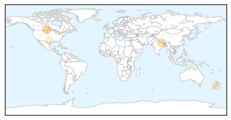
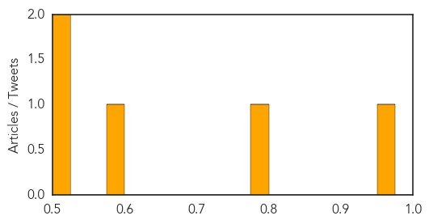

Measles
30-Day Web Trend
0 alerts, 0 warnings

30-Day Twitter Trend
1 alerts, 0 warnings

Article Locations

Article Confidences

Top Articles:
- 0.977
- Sudan facing measles outbreak with 2,500 cases nationwide – UN
- 0.968
- UN says Sudan facing huge measles outbreak
- 0.884
- Calif. Vaccinations Required for Day Care Center Workers Under Bill Approved by State Senate - SB792
- 0.841
- State confirms second measles case of the year
- 0.708
- Second measles case of 2015 confirmed in Massachusetts
Top Tweets:
-
No tweets found for Jun 23, 2015
Hepatitis
30-Day Web Trend
0 alerts, 0 warnings

30-Day Twitter Trend
0 alerts, 0 warnings

Article Locations
Article Confidences
Top Articles:
- 0.968
- Risk Of HepE Outbreak “Very High” In Earthquake-Ravaged Nepal
- 0.776
- Hepatitis A Warning for Customers of Original Joe's in Strathmore, Alberta
- 0.597
- Enbrel (Etanercept Powder and Solvent for Solution for Injection; Etanercept Solution for Injection ; Etanercept Solution for Injection) Drug
- 0.523
- Hepatitis A Warning For Original Joe's Customers in Canada
- 0.521
- Dodging the Doctor? Real Men Get an Annual Check Up
Top Tweets:
-
No tweets found for Jun 23, 2015